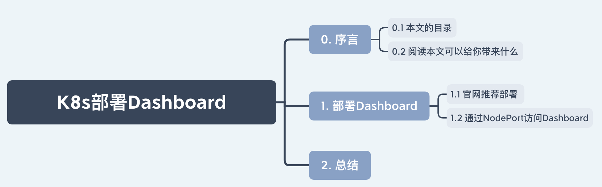
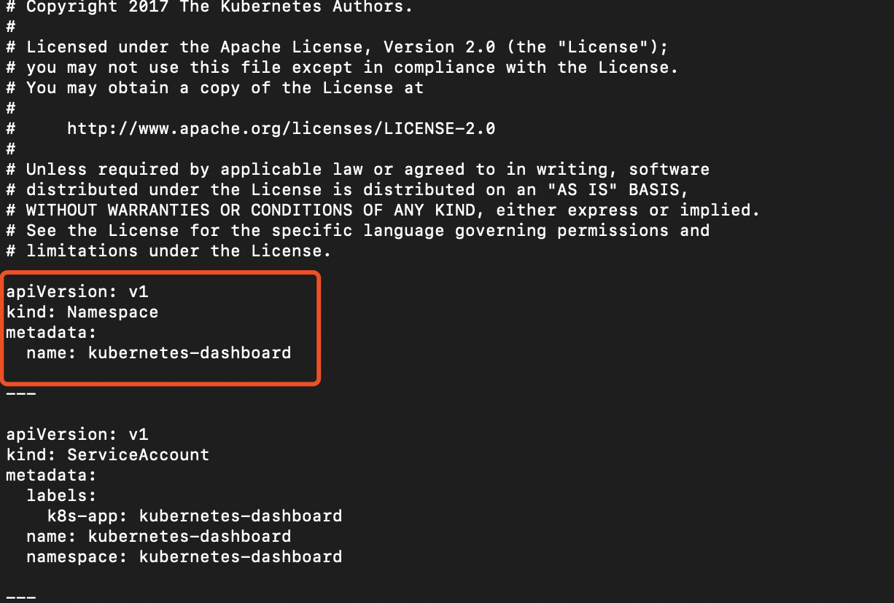
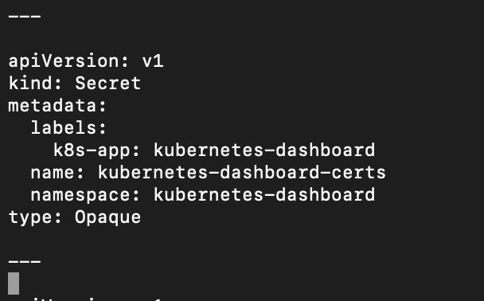
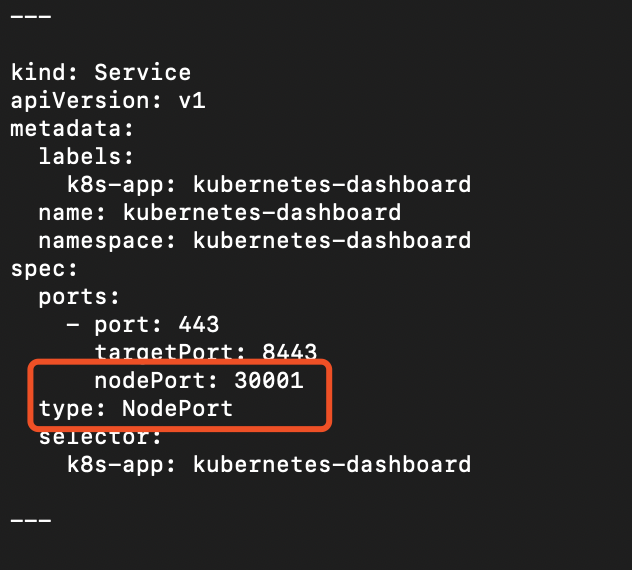
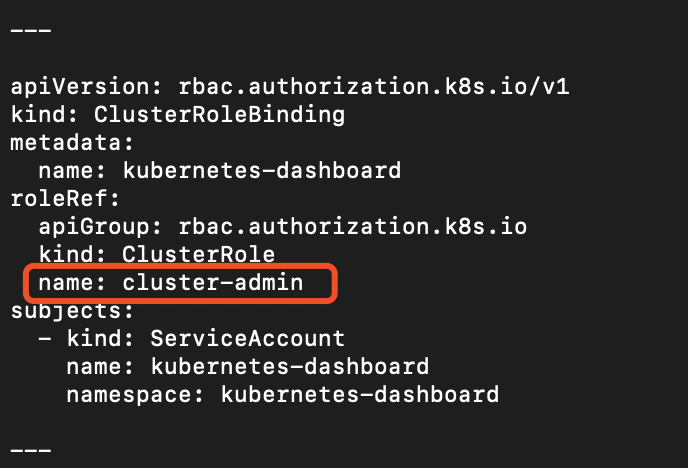
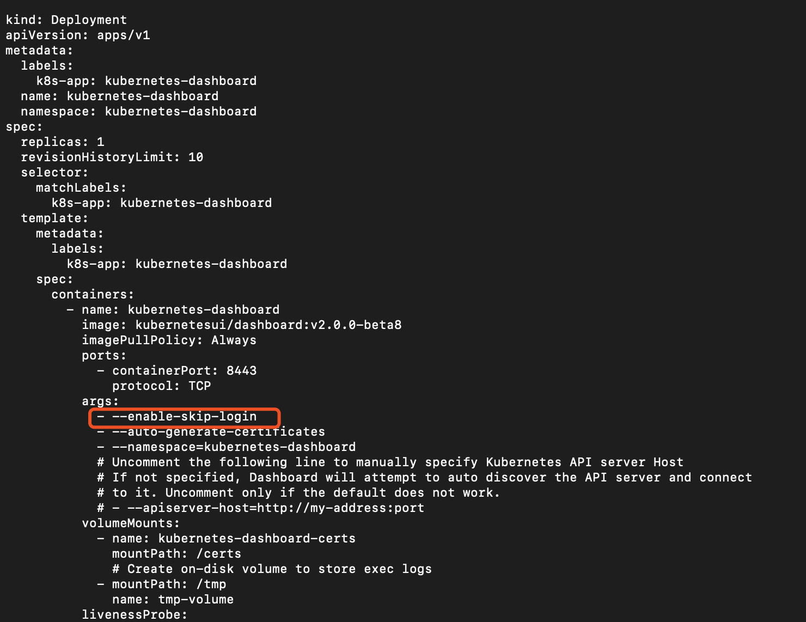
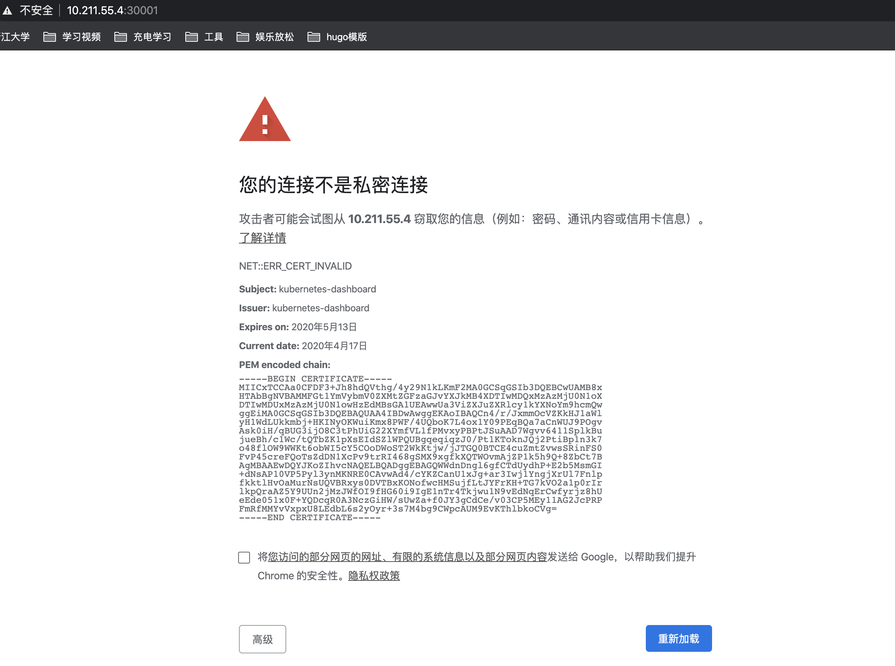
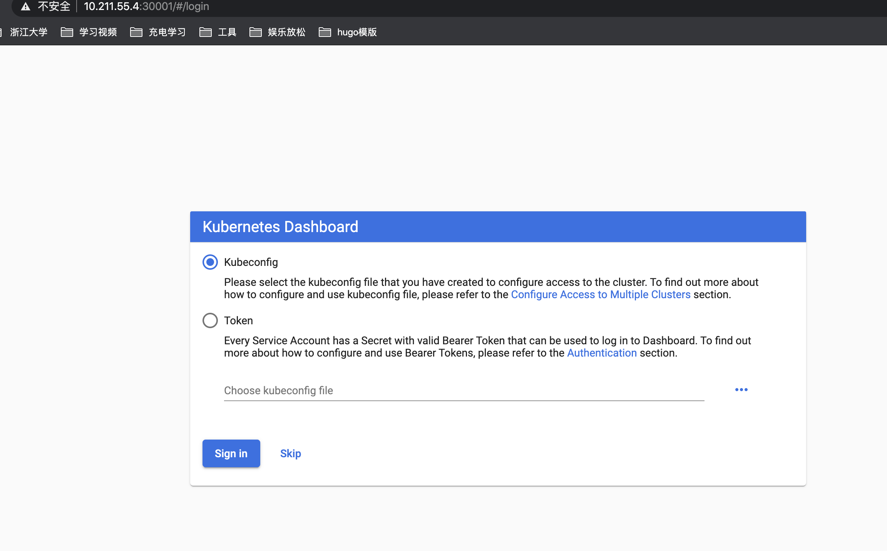
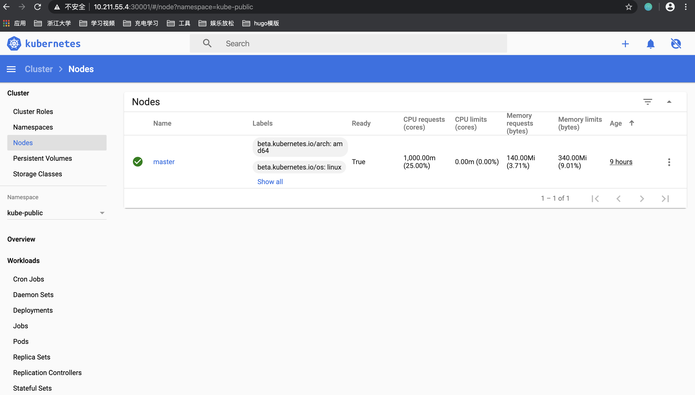

K8s部署Dashboard
上一篇文章讲述了自己如果使用 Kubeadm 安装k8s，部署应用还是需要一个前端页面，这样便于操作。
0. 序言
0.1 本文的目录

0.2 阅读本文可以给你带来什么
简单了解在社区k8s上部署Dashboard。
1. 部署Dashboard
1.1 官网推荐部署
其实也就是简单的2步
kubectl apply -f https://raw.githubusercontent.com/kubernetes/dashboard/v2.0.0-beta8/aio/deploy/recommended.yaml
kubectl proxy
# 访问
http://localhost:8001/api/v1/namespaces/kubernetes-dashboard/services/https:kubernetes-dashboard:/proxy/
1.2 通过NodePort访问Dashboard
1.下载yaml
wget -e robots=off https://raw.githubusercontent.com/kubernetes/dashboard/v2.0.0-beta8/aio/deploy/recommended.yaml
2.创建namespace
kubectl create ns kubernetes-dashboard
将recommended.yaml中的创建namespace的配置删除

3.创建证书
# 创建目录
mkdir certs
cd certs
openssl genrsa -out dashboard.key 2048
openssl req -new -out dashboard.csr -key dashboard.key -subj '/CN=kubernetes-dashboard'
openssl x509 -req -in dashboard.csr -signkey dashboard.key -out dashboard.crt
4.创建secret
kubectl create secret generic kubernetes-dashboard-certs --from-file=dashboard.key --from-file=dashboard.crt -nkubernetes-dashboard
5.删除recommended.yaml中secret

6.修改service类型位nodeport

7.修改ClusterRoleBinding绑定用户——当前集群管理员用户

8.添加跳过登陆参数

详细 yaml 信息如下：
# Copyright 2017 The Kubernetes Authors.
#
# Licensed under the Apache License, Version 2.0 (the "License");
# you may not use this file except in compliance with the License.
# You may obtain a copy of the License at
#
# http://www.apache.org/licenses/LICENSE-2.0
#
# Unless required by applicable law or agreed to in writing, software
# distributed under the License is distributed on an "AS IS" BASIS,
# WITHOUT WARRANTIES OR CONDITIONS OF ANY KIND, either express or implied.
# See the License for the specific language governing permissions and
# limitations under the License.
apiVersion: v1
kind: ServiceAccount
metadata:
labels:
k8s-app: kubernetes-dashboard
name: kubernetes-dashboard
namespace: kubernetes-dashboard
---
kind: Service
apiVersion: v1
metadata:
labels:
k8s-app: kubernetes-dashboard
name: kubernetes-dashboard
namespace: kubernetes-dashboard
spec:
ports:
- port: 443
targetPort: 8443
nodePort: 30001
type: NodePort
selector:
k8s-app: kubernetes-dashboard
---
apiVersion: v1
kind: Secret
metadata:
labels:
k8s-app: kubernetes-dashboard
name: kubernetes-dashboard-csrf
namespace: kubernetes-dashboard
type: Opaque
data:
csrf: ""
---
apiVersion: v1
kind: Secret
metadata:
labels:
k8s-app: kubernetes-dashboard
name: kubernetes-dashboard-key-holder
namespace: kubernetes-dashboard
type: Opaque
---
kind: ConfigMap
apiVersion: v1
metadata:
labels:
k8s-app: kubernetes-dashboard
name: kubernetes-dashboard-settings
namespace: kubernetes-dashboard
---
kind: Role
apiVersion: rbac.authorization.k8s.io/v1
metadata:
labels:
k8s-app: kubernetes-dashboard
name: kubernetes-dashboard
namespace: kubernetes-dashboard
rules:
# Allow Dashboard to get, update and delete Dashboard exclusive secrets.
- apiGroups: [""]
resources: ["secrets"]
resourceNames: ["kubernetes-dashboard-key-holder", "kubernetes-dashboard-certs", "kubernetes-dashboard-csrf"]
verbs: ["get", "update", "delete"]
# Allow Dashboard to get and update 'kubernetes-dashboard-settings' config map.
- apiGroups: [""]
resources: ["configmaps"]
resourceNames: ["kubernetes-dashboard-settings"]
verbs: ["get", "update"]
# Allow Dashboard to get metrics.
- apiGroups: [""]
resources: ["services"]
resourceNames: ["heapster", "dashboard-metrics-scraper"]
verbs: ["proxy"]
- apiGroups: [""]
resources: ["services/proxy"]
resourceNames: ["heapster", "http:heapster:", "https:heapster:", "dashboard-metrics-scraper", "http:dashboard-metrics-scraper"]
verbs: ["get"]
---
kind: ClusterRole
apiVersion: rbac.authorization.k8s.io/v1
metadata:
labels:
k8s-app: kubernetes-dashboard
name: kubernetes-dashboard
rules:
# Allow Metrics Scraper to get metrics from the Metrics server
- apiGroups: ["metrics.k8s.io"]
resources: ["pods", "nodes"]
verbs: ["get", "list", "watch"]
---
apiVersion: rbac.authorization.k8s.io/v1
kind: RoleBinding
metadata:
labels:
k8s-app: kubernetes-dashboard
name: kubernetes-dashboard
namespace: kubernetes-dashboard
roleRef:
apiGroup: rbac.authorization.k8s.io
kind: Role
name: kubernetes-dashboard
subjects:
- kind: ServiceAccount
name: kubernetes-dashboard
namespace: kubernetes-dashboard
---
apiVersion: rbac.authorization.k8s.io/v1
kind: ClusterRoleBinding
metadata:
name: kubernetes-dashboard
roleRef:
apiGroup: rbac.authorization.k8s.io
kind: ClusterRole
name: cluster-admin
subjects:
- kind: ServiceAccount
name: kubernetes-dashboard
namespace: kubernetes-dashboard
---
kind: Deployment
apiVersion: apps/v1
metadata:
labels:
k8s-app: kubernetes-dashboard
name: kubernetes-dashboard
namespace: kubernetes-dashboard
spec:
replicas: 1
revisionHistoryLimit: 10
selector:
matchLabels:
k8s-app: kubernetes-dashboard
template:
metadata:
labels:
k8s-app: kubernetes-dashboard
spec:
containers:
- name: kubernetes-dashboard
image: kubernetesui/dashboard:v2.0.0-beta8
imagePullPolicy: Always
ports:
- containerPort: 8443
protocol: TCP
args:
- --enable-skip-login
- --auto-generate-certificates
- --namespace=kubernetes-dashboard
# Uncomment the following line to manually specify Kubernetes API server Host
# If not specified, Dashboard will attempt to auto discover the API server and connect
# to it. Uncomment only if the default does not work.
# - --apiserver-host=http://my-address:port
volumeMounts:
- name: kubernetes-dashboard-certs
mountPath: /certs
# Create on-disk volume to store exec logs
- mountPath: /tmp
name: tmp-volume
livenessProbe:
httpGet:
scheme: HTTPS
path: /
port: 8443
initialDelaySeconds: 30
timeoutSeconds: 30
securityContext:
allowPrivilegeEscalation: false
readOnlyRootFilesystem: true
runAsUser: 1001
runAsGroup: 2001
volumes:
- name: kubernetes-dashboard-certs
secret:
secretName: kubernetes-dashboard-certs
- name: tmp-volume
emptyDir: {}
serviceAccountName: kubernetes-dashboard
nodeSelector:
"beta.kubernetes.io/os": linux
# Comment the following tolerations if Dashboard must not be deployed on master
tolerations:
- key: node-role.kubernetes.io/master
effect: NoSchedule
---
kind: Service
apiVersion: v1
metadata:
labels:
k8s-app: dashboard-metrics-scraper
name: dashboard-metrics-scraper
namespace: kubernetes-dashboard
spec:
ports:
- port: 8000
targetPort: 8000
selector:
k8s-app: dashboard-metrics-scraper
---
kind: Deployment
apiVersion: apps/v1
metadata:
labels:
k8s-app: dashboard-metrics-scraper
name: dashboard-metrics-scraper
namespace: kubernetes-dashboard
spec:
replicas: 1
revisionHistoryLimit: 10
selector:
matchLabels:
k8s-app: dashboard-metrics-scraper
template:
metadata:
labels:
k8s-app: dashboard-metrics-scraper
annotations:
seccomp.security.alpha.kubernetes.io/pod: 'runtime/default'
spec:
containers:
- name: dashboard-metrics-scraper
image: kubernetesui/metrics-scraper:v1.0.1
ports:
- containerPort: 8000
protocol: TCP
livenessProbe:
httpGet:
scheme: HTTP
path: /
port: 8000
initialDelaySeconds: 30
timeoutSeconds: 30
volumeMounts:
- mountPath: /tmp
name: tmp-volume
securityContext:
allowPrivilegeEscalation: false
readOnlyRootFilesystem: true
runAsUser: 1001
runAsGroup: 2001
serviceAccountName: kubernetes-dashboard
nodeSelector:
"beta.kubernetes.io/os": linux
# Comment the following tolerations if Dashboard must not be deployed on master
tolerations:
- key: node-role.kubernetes.io/master
effect: NoSchedule
volumes:
- name: tmp-volume
emptyDir: {}
9.部署recommended.yaml
kubectl create -f recommended.yaml
NET::ERR_CERT_INVALID问题
访问https://

解决办法
在chrome该页面上，直接键盘敲入这11个字符：thisisunsafe
界面展示:


2. 总结
本文简单讲述了在如何在k8s安装Dashboard的2种方式，推荐第二种。
参考
- 原文作者：萝卜头LJW
- 原文链接：https://robotljw.github.io/post/2020-4-17-install-dashboard/
- 版权声明：本作品采用知识共享署名-非商业性使用-禁止演绎 4.0 国际许可协议进行许可，非商业转载请注明出处（作者，原文链接），商业转载请联系作者获得授权。